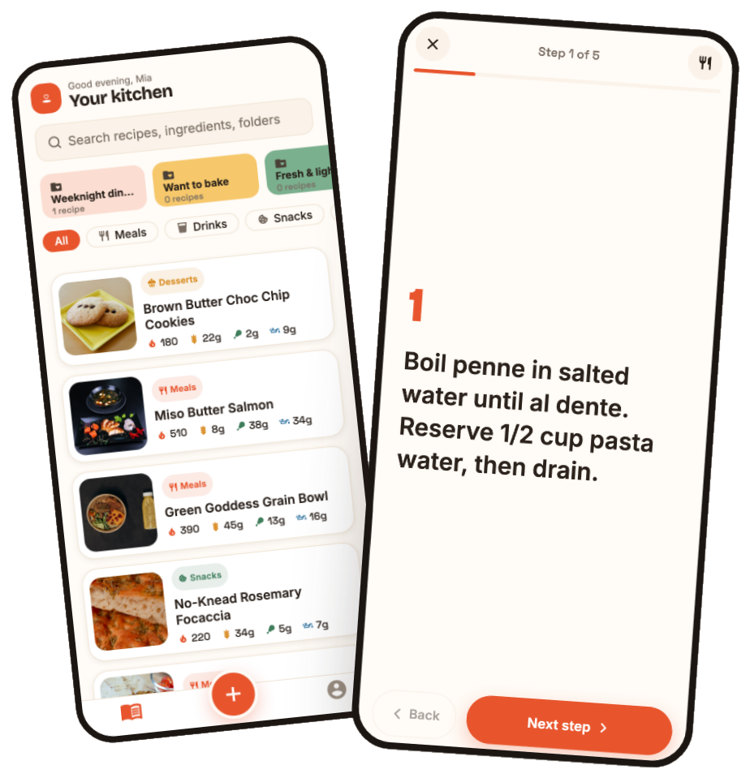
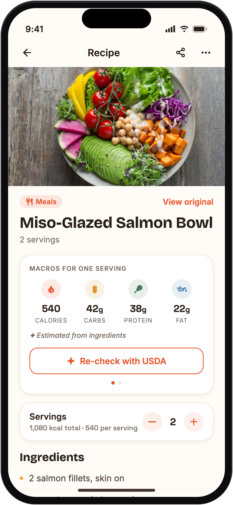
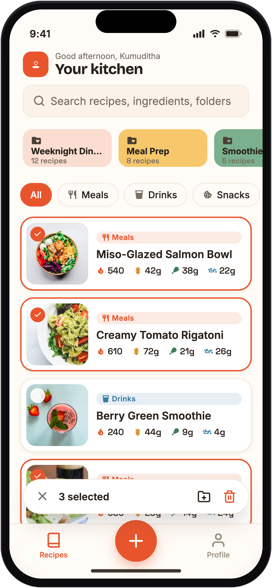

Save from any link
Instagram, TikTok and recipe blogs. Savr prefers structured recipe data and falls back gracefully to page text.
Paste a link from Instagram, TikTok or any recipe blog - Savr pulls out the ingredients, steps and macros for you, and keeps them on your phone.
Recipes live on your device — browse and cook fully offline.

No re-typing, no screenshots buried in your camera roll. Just paste and go.
Drop in an Instagram or TikTok post, or any recipe blog URL. That's the whole job.
It extracts the title, servings, ingredients and steps — and estimates the macros when they aren't listed.
Everything is saved on your phone, organised and searchable. Cook mode walks you through it, step by step.
Built for the way you actually save and cook - warm, fast and yours.
Instagram, TikTok and recipe blogs. Savr prefers structured recipe data and falls back gracefully to page text.
Calories, carbs, protein and fat on every recipe — estimated when the source doesn't state them.
Meals, Drinks, Snacks and Desserts out of the box, plus custom folders for your own collections.
Recipes, folders and images live on-device. Only saving a new recipe needs the network.
A full-screen, one-step-at-a-time view with tap-to-advance zones, a progress bar and an ingredient peek.
Find recipes by title, ingredient, step, note, category, folder or source link — instantly.
A serving stepper live-scales quantities and macros, with metric ⇄ imperial conversion built in.
Optionally recompute macros from parsed ingredient weights against USDA FoodData Central.
A warm, food-forward theme in light and dark, with metric or imperial units — your preference, remembered.
Every saved recipe gets a clean macro summary. When a source leaves them out, Savr estimates - and you can cross-check against the USDA database for the real numbers.


Questions, feedback, a bug, or want in on early access? Drop us a line and we will get back to you.
Save the ones you love once — and keep them, organised and offline, for good.
Get early access